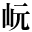
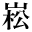
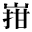
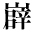

●内藤湖南『禹貢製作の時代』
●夏目漱石『草枕』
●夏目漱石『満韓ところどころ』
|  | 1_47_69.gif |
●芥川龍之介『素戔嗚尊』 ●夏目漱石『草枕』 ●夏目漱石『満韓ところどころ』 |
| 1_47_78.gif |
●渡辺温『シルクハット』 |
|
|  | 1_47_81.gif |
●内藤湖南『尚書稽疑』 |
| 1_47_92.gif |
●夏目漱石『草枕』 |
|
| 1_47_93.gif |
●綱島梁川『予が見神の実験』 ●夏目漱石『琴のそら音』 |
|
|
2_8_33.gif |
●小栗虫太郎『人外魔境 天母峰』 ●内藤湖南『禹貢製作の時代』 |
| 2_8_71.gif |
●中里介山『大菩薩峠 ４三輪の神杉の巻』 |
|
| 2_8_72.gif |
●芥川龍之介『素戔嗚尊』 ●夏目漱石『草枕』 ●夏目漱石『満韓ところどころ』 |
|  | gaiji001.gif |
●森鴎外『青年』 |
| gaiji002.gif |
●橋本進吉『国語音韻の変遷』 ●橋本進吉『古代国語の音韻に就いて』 |
|
|  | gaiji003.gif |
●幸田露伴『囲碁雑考』 |